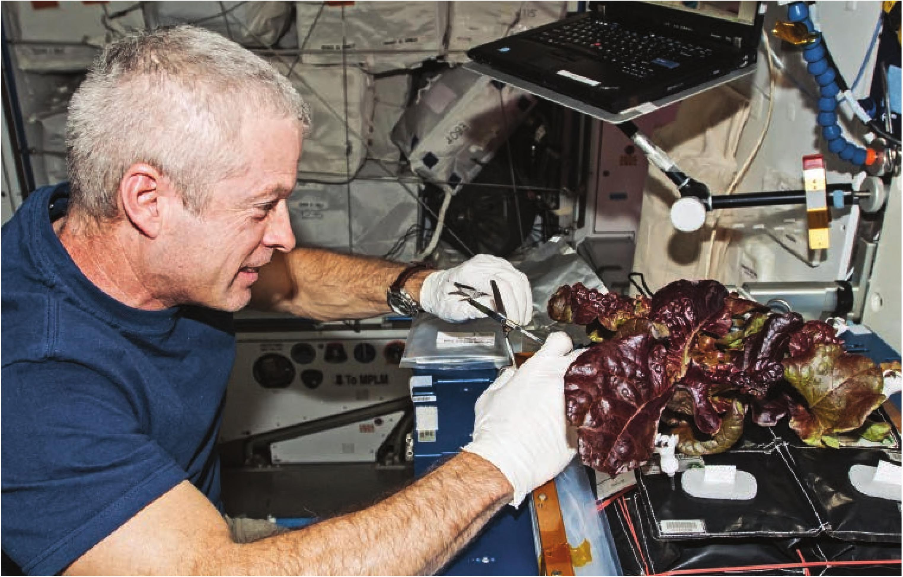

5 Can be used in any location Hydroponics allows gardeners to grow in areas that do not possess quality soil. Hydroponics also allows gardeners to grow in locations that would be unsuited for crops due to inhospitable climate or limited water access. One of the biggest opportunities for hydroponics is growing in deserts. Deserts often have a wonderful climate for growing crops, with lots of light and little pest presence, but they are limited in access to water. Hydroponics uses substantially less water than traditional methods and can make farming in deserts a viable option. Hydroponics is also the primary method used to grow plants in space. Many crops, including lettuce, have been grown in space using hydroponic methods. Leafy vegetables can be grown hydroponically in outer space. Photo courtesy of NASA. 6 Uses less water Hydroponics uses less water because you may reuse any irrigation water not directly taken up by the crop. In soil, much of the water is lost to evaporation and drainage. In hydroponics, evaporation can be reduced or eliminated by covering the water reservoir, and all drainage water is collected to be reused. 7 No weeding and no herbicides No weeding. It may seem like a small point at first, but after a season of pulling garden weeds, most traditional soil gardeners would love to have spent that time doing something more fun, like preparing dishes from their harvest. Hydroponic growers also have no need to purchase herbicides. Furthermore, hydroponic growers never have to face the potential crop damage of herbicide drift when a breeze accidentally blows herbicide onto your garden and injures or kills your precious plants. INTRODUCTION 9

